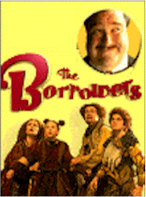

Contents | Features | Reviews | News | Archives | Store |
 |
|
| Movie Credits | Buy It! |
The Borrowers
Review by Elias Savada
Posted 13 February 1998
|  | Directed by Peter Hewitt Starring
John Goodman, |
Although this film is firmly rooted in the series of children's books by the late Mary Norton, it has a touch of Dickens, a spritz of Rube Goldberg, and a dash of Monty Python, while still aiming and hitting the target for wide family appeal. A popcorn pleaser. Not a bad feat for fledgling director Peter Hewitt (Bill and Ted's Bogus Journey, Tom and Huck) and freshman screenwriters Gavin Scott and John Kamps. This is tried and true film, a marvel more in its production design (kudos to Gemma Jackson) and costumes (Marie France), but also a tribute to fine performances big and small. Big as in John Goodman, who broadly rumbles through the piece as the villainous lawyer Ocious C. Potter. Small as in the clan of Borrowers, those four-inch high little folk who live in the floorboards of our houses and under the streets.
At home with the Lenders we find mom, dad, and teenage gizmologist Pete (Bradley Pierce, the young gamester in Jumanji). The boy's parents express disbelief when he suggests that lost socks, misplaced pens, and other household items are being "borrowed" by the curly, carrot-topped diminutive creatures who take exceedingly great pains to prevent interaction with their larger hosts, lest they be "squished" by these monstrous human "beans." While the odious Ocious plots a nefarious plan to scrooge the Lenders' home right out from under them, it's the chance meeting of Pete and bored teenage Borrower Arietty (with a coiffure reminiscent of Princess Leia on a bad hair day) that forces a strange alliance. However, the girl's plea on Pete's behalf to her stern father Pod Clock (Jim Broadbent) and emotional mom Homily Clock (Flora Newbigin) brings only the most tenuous of allegiances.
Arriety and her brother Peagreen are accidentally forced back to their old home when the Lenders depart for new digs across town in a moving van also transporting the elder Clocks. A. and Pea discover the plump and greedy Potter ripping out walls in search of a will that would ruin his demolition plans for the house. What follows parallels the battle fought in MouseHunt, except in this film the human is a rodent of a different kind. And just like MouseHunt, we have an oddball pest control expert, although Mark Williams' Exterminator Jeff (and his bloodhound, cheese-gobbling Mr. Smelly) is not as hilariously off-the-wall as Christopher Walken. Williams does a sympathetic spin on his bumbling henchman of 1996's 101 Dalmatians.
The Borrowers succeeds best in its seamless integration of Lilliputian and gargantuan worlds. Director Hewitt hits it on the head, "The best special effects films are those where the effects are secondary to the story, they exist to tell the story – help you meet and enjoy the characters." The film has a definite Fifties look, painted in reds and browns then bathed in an amber glow, while still holding onto some modern contraptions (remote controls, cell phones) with decidedly different retro looks. Oversized product placements play off the size distortion in a conspicuous but hilariously reasonable manner – Arriety falling into a gallon of Breyer's ice cream, Reach floss as part of Pod's mountain (i.e. cabinet) climbing gear, and Energizer-powered back packs.
And finally bad-guy John Goodman. Like his character in King Ralph, he is an ugly American awash on British soil. He's big, he's oafish, and he’s devilish – a perfect foil for his pint-size competition. And this mean-tempered Gulliver gets his comeuppance in a scene taken from the commando drop in Brazil. Here's a film where all's well and it ends well. Except, I can't find my pen. It's was here a minute ago.
Contents | Features | Reviews | News | Archives | Store
Copyright © 1999 by Nitrate Productions, Inc. All Rights Reserved.